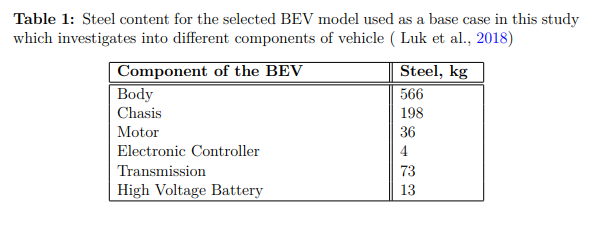
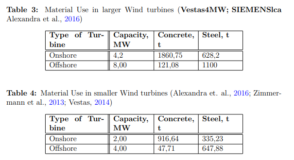
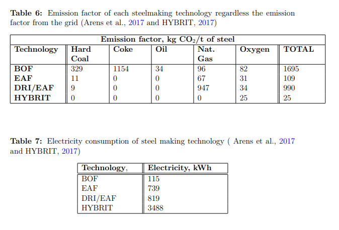

Created Friday 29 January 2021 (21-01-29_11-38-27)
@2021 @materials
Kakoti, Krishna Kamal & Tasanakul, Worakamon (2019). Material use in a Low Carbon Energy System. Master's thesis, Department of Space, Earth and Environment, Chalmers University of Technology. https://hdl.handle.net/20.500.12380/300128
.\Master_Thesis_Kakoti och Tasanakul.pdf
- Arvioi teräksenkulutuksen tuulivoimalle ja sähköautoille EUssa 2050 saakka
- laskee CO2-päästöt HYBRITille ja valokaariuunille
- vuosittainen teräksen kulutus luokkaa 5-26 Mt
- tästä sähköautot vaativat 17-87%, tuulivoima 34-44%
18
Vehicle stock
The dynamic stock of BEV is developed similarly as the methodology of Ziemann et al., (2018) and Modaresi and Müller (2012). The parameters required for stock calculation in each year include the population of European Union countries from 2017-2050 as projected by the United Nation for the studied time-frame and the numbers of vehicle ownership per capita.
19
The BEV adoption, for passenger car, in each year is assumed to follow along with the logistic curve, which is also considered in the study of Kushnir and Sandén (2012), and will reach the specific fleet projected by European Commission (2018a) in 2050 for different scenarios including the Baseline scenario, as shown in the Figure 7. The chosen low-carbon scenarios for the analysis from the commission are P2X, COMBO and 1.5 TECH which were discussed in " The EU road map for climate-neutral economy" section
20
The material compositions inside the BEV can possibly alter due to the purposes of weight reduction, fuel saving and limiting CO2 emission (Lewis, Kelly and Keoleian, 2014). Also, several studies of material compositions in the vehicle have been reviewed and revealed that different types of bulk material were used, especially the lightweight material (Mayyas et al., 2018; Milovanoff et al., 2019 and Luk et al., 2018). This implies that the steel contents in the BEV may vary between different BEV models. Therefore, the various references can diversify the investigated results of material requirements in the BEV regarding the different material compositions in particular vehicle models which also shown in Figure 8. However, for this study, the steel compositions in the vehicle data are scrutinised from the vehicle model developed by Luk et al., (2018), which adjusts the vehicle specification of GREET (Argonne National Laboratory, 2016) and further categorises them into different power trains, however, only BEV will be considered in this study. Additionally, steel contents in the BEV are assumed to be constant over the considered timeframe for a simplification.
21
Table 1: steel content for BEV

25
Wind turbines
Tables 3 & 4: material use

29
Emissions and electricity consumption of steelmaking

References
Bonou, Alexandra, Alexis Laurent, and Stig I Olsen (2016). “Life cycle assessment of onshore and offshore wind energy-from theory to application”. Applied Energy 180, pp. 327–337. issn: 0306-2619. doi: 10.1016/j.apenergy.2016.07.058.
url: http://dx.doi.org/10.1016/j.apenergy.2016.07.058.
Luk, Jason M. et al. (2018). “Greenhouse gas emission benefits of vehicle lightweighting: Monte Carlo probabalistic analysis of the multi material lightweight vehicle glider”. In: Transportation Research Part D: Transport and Environment 62(February), pp. 1–10. issn: 13619209. doi: 10.1016/j.trd.2018.02.006. url:
https://doi.org/10.1016/j.trd.2018.02.006. V:2018:LukLightweightingVehicles
Mayyas, Ahmad et al. (2018). “Vehicle’s lightweight design vs. electrification from life cycle assessment perspective”. In: Journal of Cleaner Production 167, pp. 687–701. issn: 09596526. doi: 10.1016/j.jclepro.2017.08.145. V:2018:MayyasVehicleLightweighting
Milovanoff, Alexandre et al. (2019). “A Dynamic Fleet Model of U.S Light-Duty Vehicle Lightweighting and Associated Greenhouse Gas Emissions from 2016 to 2050”. In: Environmental Science and Technology. issn: 15205851. doi: 10.1021/acs.est.8b04249 V:2019:MilovanoffVehicleLightweighting
REUTERS (2018). Epic battle between steel and aluminum as automakers develop EVs. url: https://bit.ly/2wIxU34.
Siemens Gamesa (2014). “A clean energy solution – from cradle to grave”. In: p. 16.
url: https : / / www . siemensgamesa . com / en - int/ - /media / siemensgamesa /
downloads / en / products - and - services / offshore / brochures / siemens - gamesa -
environmental-product-declaration-epd-sg-8-0-167.pdf.
Siemens Gamesa (2017). Offshore Wind Turbines. url: https://www.siemensgamesa.
com/en-int/products-and-services/offshore.
Simoes, Sofia et al. (2015). “Assessing critical metal needs for a low carbon energy
system in 2050”. In: International Conference on the European Energy Market,
EEM. isbn: 9781467366915. doi: 10.1109/EEM.2015.7216780.
Simon, Bálint, Saskia Ziemann, and Marcel Weil (2015). “Potential metal requirement of active materials in lithium-ion battery cells of electric vehicles and its
impact on reserves: Focus on Europe”. In: Resources, Conservation and Recycling 104, pp. 300–310. issn: 18790658. doi: 10.1016/j.resconrec.2015.07.011.
Zimmermann, Till, Max Rehberger, and Stefan Gößling-reisemann (2013). “Material Flows Resulting from Large Scale Deployment of Wind Energy in Germany”. In: pp. 303–334. doi: 10.3390/resources2030303. 2013:WindMaterialFlows-Zimmermann
Vestas (2014). “Material Use Turbines 3MW Platform Turbines”. In: ( December),
pp. –2.
{kind=link}
{kind=link}
{kind=link}